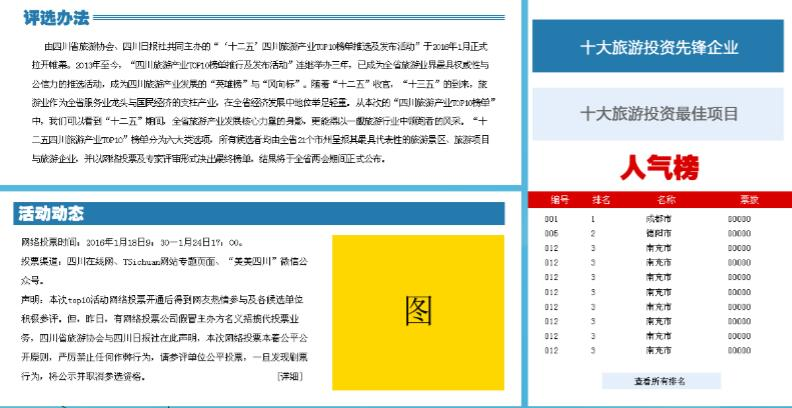

20160713-20160714四川旅游产业TOP10专题
带着不扎实的html、css基础以及深知自己没刷完过一遍js开始的大二实习。这是我在公司的第一张图，两周后的自己来看现在这张图发现确实是入门级的。总的来说是边做边查、强行糊弄过去的吧。对于入门者来说，难点可能算是这张图的网页选项卡部分和浮标部分。边看边学用js实现也是不难的。

20160715 2016-7月中国大数据应用大会专题
这张图难点是轮播，在网上看了许多相关代码后逐渐理解了轮播的原理：把参与轮播的每张图放在一个div里，并且设置父级div的宽度为单张图片宽度，位置设置为相对定位，超出页面部分设置为隐藏overflow:hidden，并且把每张图向左浮动，通过js控制父级div的left属性即可。
20160718-20160719四川日报网问政四川频道
刚拿到这张图的时候对自己能不能写完都没什么把握，很多地方都是新挑战。不管是页面上半部分的点击按钮切换幻灯片部分，亦或是浮标、或是网页选项卡，还是地图部分的判断焦点所处位置的逻辑，对我而言都是挑战。依然是边做边查。第一次写了三百多行的js代码，接近两千行的html，满满的收获。

20160720-20160722市州手机版
第一次写自适应页面，同样多的挑战。而不仅是简简单单的@media媒体查询，也不仅是单位方面把像素改为em或者百分比那样。熬夜想要做成一件事情的感觉真的很好~